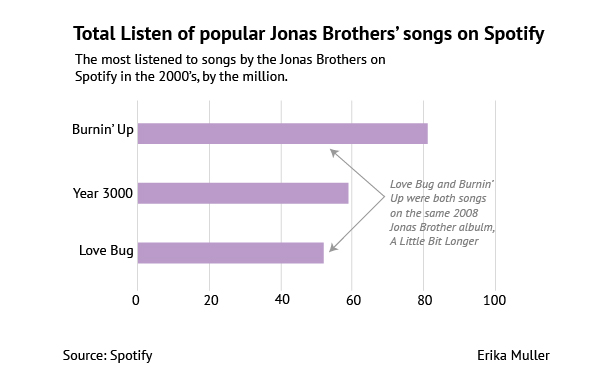

Picture this: it’s 2006, you run off the school bus straight to the living room and turn on the Disney Channel. What are you seeing? You're probably watching Raven look into the future, Zach and Cody run around the Tipton or Hannah Montana singing “The Best of Both Worlds”.
If you turn on the TV now, what you will see about these stars is much different than what you saw in 2006. Some have been arrested, went to rehab, released a new album, came out with a blockbuster movie or sadly, are no longer with us.
Here are past Disney Channel stars: the good, the bad and the ugly.
From 2003 to 2007, Brown was best known for his role as Eddie Thomas on Disney Channel’s That’s So Raven.
In 2018, Brown was arrested for an outstanding warrant for his arrest after his girlfriend filed assault charged against him in 2016. In December 2018, Brown appeared on an episode of Dr. Phil where he talked about his drug addiction. After Dr. Phil suggested he seek treatment for his addiction, Brown responded by saying “it’s a slap in the face to people that actually need it”.
According to Celebrity Net Worth, Orlando Brown is worth $20,000.
Boyce had a couple movie roles before playing Luke Ross on Disney Channel’s Jessie from 2011 to 2015. He continued his Disney career in 2015 as Carlos on the Descendants film series.
Boyce died on July 6, 2019, after suffering a seizure in his sleep. His memory lives on through The Cameron Boyce Foundation, created by his family to provide “young people artistic and creative outlets as alternatives to violence and negativity and uses resources and philanthropy for positive change in the world.”

Zendaya kick started her career in 2010 as Rocky Blue on Disney’s Shake It Up.
After her run with Disney Channel, Zendaya was casted as Michelle in the Spider-Man reboot, Spider-Man: Homecoming. Her run continued when she was casted as Anne Wheeler in the 2017 film, The Greatest Showman. Zendaya brought her talents to the runway after releasing her line with Tommy Hilfiger, TOMMY X ZENDAYA, at New York Fashion Week in the Fall of 2019.
According to Celebrity Net Worth, Zendaya is worth $5 million.


Nick, Joe and Kevin became household names in 2007 when they released their first album, Jonas Brothers. The three brothers early career consisted of starring in movies Camp Rock and Camp Rock 2 with Demi Lovato. They were best known for their songs “‘Burnin’ Up” “Year 3000” and “Lovebug.”
After breaking up in 2013, the band members went their separate ways. In 2012, Kevin and his wife, Danielle Jonas, had their own show on the E! Network, Married to Jonas. Since his Disney Channel days, has two kids with his wife. Nick continued his music career as a solo artist releasing hits like “Chains” and “Jealous”. Like with his younger brother, Joe also continued his music as the lead singer of the band DNCE, most famous for their song “Cake By The Ocean”. After a six years apart, the band decided to get back back together releasing the single Sucker, and the album Happiness Begins. In an interview on The Late Late Show with James Cordon, the band shared that while filming for their documentary, they “realized right away that this is where we are meant to be in our lives at this moment.”
According to Celebrity Net Worth, the Jonas Brothers are worth a combined $150 million.


When it came to Disney Channel experience, Tisdale was extremely well-versed. She got her start in 2005 as Maddie Fitzpatrick on The Suite Life of Zack & Cody. She later joined the High School Musical franchise in 2006, as Sharpay Evans. Tisdale was also the voice behind Candace Flynn on Disney Channel’s animated series, Phineas and Ferb. While juggling her acting career, she also had a singing career, releasing her first album Headstrong in 2007.
Tisdale took different path in her career in 2014. She decided to go behind the camera for a change as an executive producer for the show Young and Hungry. In 2016 she released her own makeup company, Illuminate Cosmetics.